Le stage première année est annulé à cause de Covid19. Le stage se déroule du 08 juin au 04 juillet 2020. Dans cette période j'ai trouvé un stage au sein de l'entreprise d'Atout PC.
Voici le convention de stage de première année: ici
Stage 2 ème année
Le stage deuxième année se déroule du 13 janvier au 06 mars 2021 pour but de Créer un site web qui se nomme Mandela Shop
Présentation Mandela Shop :
Mandela Shop est une association au sein du Lycée Nelson Mandela, c’est une boutique de vêtements,
d’effet scolaires... Mandela shop est aussi un magasin à la fois solidaire et pédagogique qui est approvisionné avec des dons de particuliers et d'entreprises.
L’objectif était la création d’un site web pour que les clients puissent commander leurs produits en ligne.
Pour régler le paiement, les clients devront se rendent sur place.
Tout d’abord, je fais maquette à papier pour créer le site.
Ensuite, j’ai réalisé le site sur le serveur Apache en utilisant WordPress.
Puis, je commence à mettre en place les plugins et de mettre en place les affiches dans la page accueille.
Tous les produits je mets dans la boutique pour que les clients allaient aller voir pour acheter leurs produits
selon leur désir.
Les étapes pour faire le site Mandela Shop sont :
1. Créer une machine virtuelle via Proxmox ( Debian )
2. Configuration de la machine Debian
3. Installation LAMP par ligne de commande
4. Installation Adminer par ligne de commande
5. Installer Wordpress
6. Configuration du Wordpress
7. Installation des plugins
8. Configuration des plugins
9. Permettre l’accès à distance entre les collègues et les clients en ligne
10. Finalisation du site
A1.1.1 : Analyse du cahier des charges d'un service à produire
A1.3.4 : Déploiement d'un service
A4.1.9 : Rédaction d'une documentation technique
A4.1.10 : Rédaction d'une documentation d'utilisation
Ressources fournies : Windows / Linux, LAMP, WordPress, Navigateur Web, Charte graphique, Entretien
sur place
Résultat attendu : Solution applicative web accessible partout pour que les clients puissent voir la boutique
du site et réserver un produit.
La première semaine de stage consiste à la Collecte des informations en analysant les informations reçu par le client , également en faisant des recherches sur internet.
Nous avons réfléchi sur comment mettre en place le site web , le Système d'exploitation à utilisé ainsi que les logiciels et matériels. Notamment le choix du serveur , la BDD, le choix du CMS, les plugins ainsi à l'accès à distance en ligne.
Pour commencer, proxmox signifie : Proxmox Virtual Environment est une solution de virtualisation libre basée sur l'hyperviseur Linux KVM, et offre aussi une solution de containers avec LXC. Elle propose un support payant. Elle est fournie avec un packaging par Proxmox Server Solutions GmbH.
Le proxmox est un serveur que notre professeur nous fournit pour accéder à distance en ligne à la machine virtuelle. Le machine virtuelle à distance permet de communiquer en équipe.
Proxmox est un serveur que notre professeur nous a fourni pour permettre l’accès à distance en ligne de la machine virtuelle. La communication à distance de la machine virtuelle permet de communiquer en équipe.
Avant explique proxmox, il faut se connecte avec votre utilisateur et le mot de passe que le professeur nous fourni et choisir le langue que nous voulons comprendre la photo ci-dessus (en haut).
Installer Debian :
×
1 / 8
Il y a rien des VM ID pourtant le numéro 327 qui à été créé.
Par la suite en configurant la machine système d’exploitation debian.
Dans la partie Général :
- Noeud : pve
- VM ID : 327
- Nom : Stage-MandelaShop
- Pool de ressource : E3
Puis, cliquez suivant pour passe dans un autre onglet et de même par la suite.
2 / 8
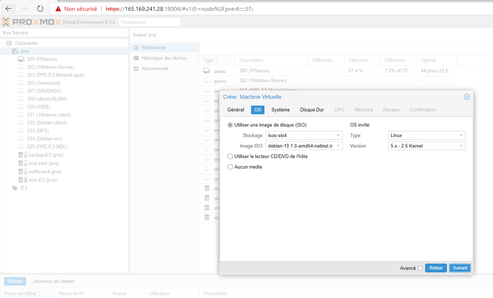
Puis, dans l'onglet OS en cliquant sur Utiliser une image de disque (ISO) pour créer une nouvelle image ISO, Stockage, le type et version.
- Nom Stockage isos-sio4
- L’Image ISO quand à importer dans la page précédent (page 9) : debian-10.1.0-amd64-netinst.iso
- Type : Linux c’est un système d’exploitation
- Version de linux : 5x-2.6 Kernel
Le reste pour l'instant est inutile.
cliquez sur suivant.
3 / 8
Dans l’onglet suivant : Système en laisse par défaut la carte graphique et contrôleur SCSI et suivant dans un nouvel l’onglet.
4 / 8
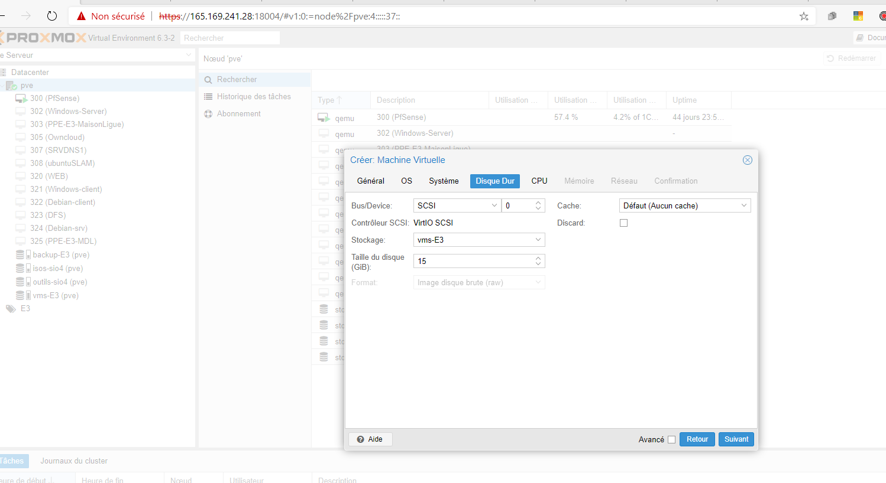
Dans l’onglet suivant : Disque dur en modifier seulement le stockage, choisissez la quantité d’espace de stockage dont vous avez besoin pour votre machine virtuelle.
Moi et mon collègue avons choisi 15 GO car on n' installe pas grand chose et pour éviter d'en stocker plusieurs sur le serveur proxmox. En évité pour laisser de place pour les autres machines virtuelles.
Le reste en laisse par défaut et passe à l’onglet suivant.
5 / 8
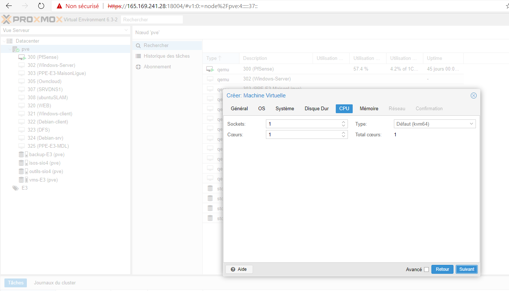
Dans l' onglet CPU , choisissez le nombre de cœurs dont vous avez besoin pour votre machine virtuelle.
6 / 8
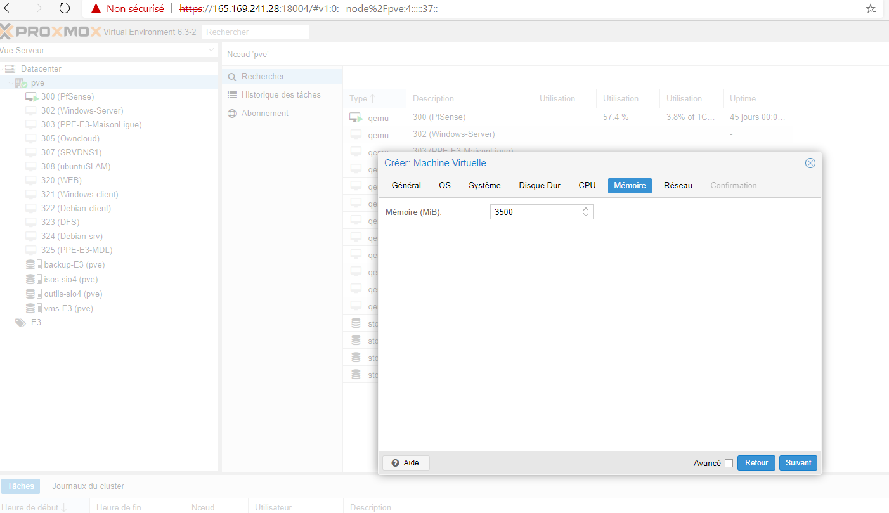
Une fois que vous avez défini les paramètres de votre processeur, cliquez sur Suivant.
Dans l' onglet Mémoire , sélectionnez la quantité de RAM que vous souhaitez allouer à votre machine virtuelle. Vous pouvez changer par la suite.
7 / 8
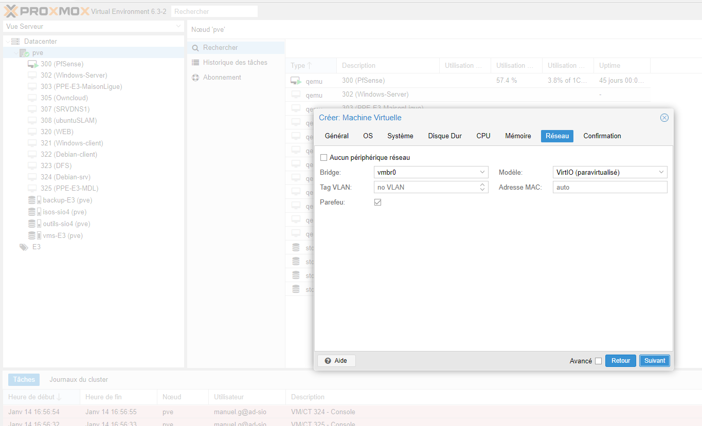
Cliquez sur Suivant pour passer à l' onglet Réseau. Laissez l’onglet par défaut et cliquez sur suivant.
8 / 8
Une fois que vous atteignez l' onglet Confirmer, assurez-vous que les informations sont correctes, puis cliquez sur Terminer.
Votre VM sera créée avec les paramètres que vous avez choisis.
Début configuration debian : en commence par sélectionnez Installer (cela lancera le programme d'installation de texte - si vous préférez un programme d'installation graphique, sélectionnez Installation graphique) ci-dessus(en haut).
2 / 30
Choisissez votre langue comme vous voulez ci-dessus(en haut).
3 / 30
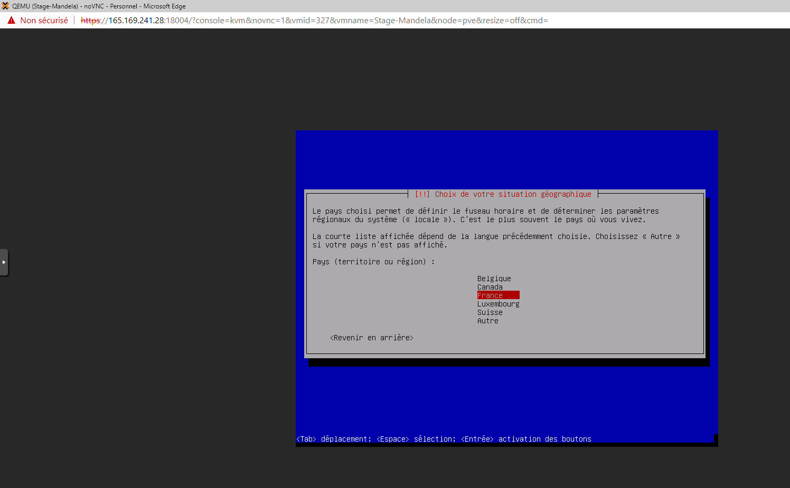
Ensuite, choisissez votre emplacement et sélectionnez la disposition du clavier. Les écrans suivants seront différents selon vos choix.
Sélectionnez simplement le pays et la disposition de clavier qui vous conviennent car ils définissent la langue que votre système Debian utilisera sur le shell et la disposition de clavier utilisée.
4 / 30
Quand à fini le chargement.
Entrez votre nom de machine que vous voulez sur le screen ci-dessus.
5 / 30
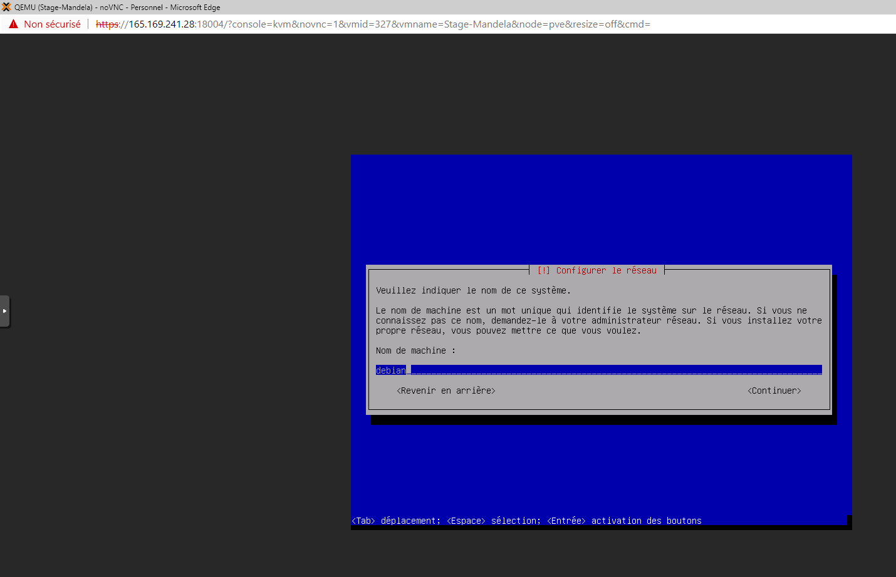
Quand à fini le chargement. Entrez votre nom de machine que vous voulez ci-dessus
Puis, Continuer.
6 / 30
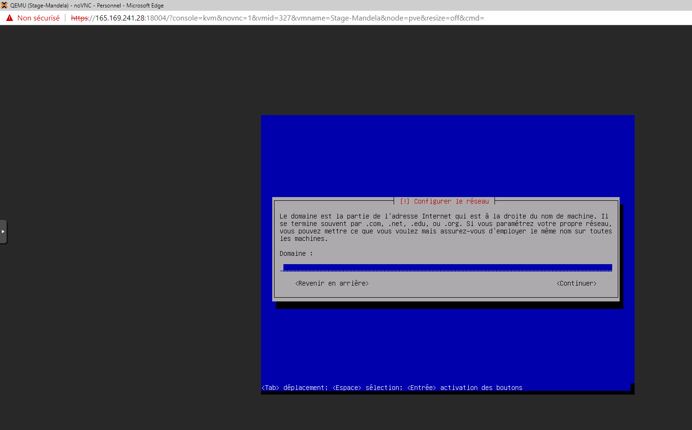
Lire l’instruction : Configurer le réseau ci-dessus et Continuer.
7 / 30
Ensuite, donnez un mot de passe à l'utilisateur root (super utilisateur de la machine) :
- Je mets pour l’instant le mot de passe naibed01 pour utilisateur root et vous pouvez changer mettre le mot de passe comme vous voulez.
- Et si vous avez à peur pour une erreur, vous pouvez cocher sur Afficher le mot de passe en clair :
Par la suite, Continuer.
8 / 30
Confirmation du même mot de passe et Continuer.
9 / 30
Par la suite choisissez votre nom utilisateur pour vous connecter à votre machine debian et Continuer.
10 / 30
Lire l’instruction ci-dessus.
Créer les utilisateurs et choisir les mots de passe ci-dessus et Continuer.
11 / 30
Par la suite, choisissez votre mot de passe pour se connecter à votre machine debian et Continuer.
12 / 30
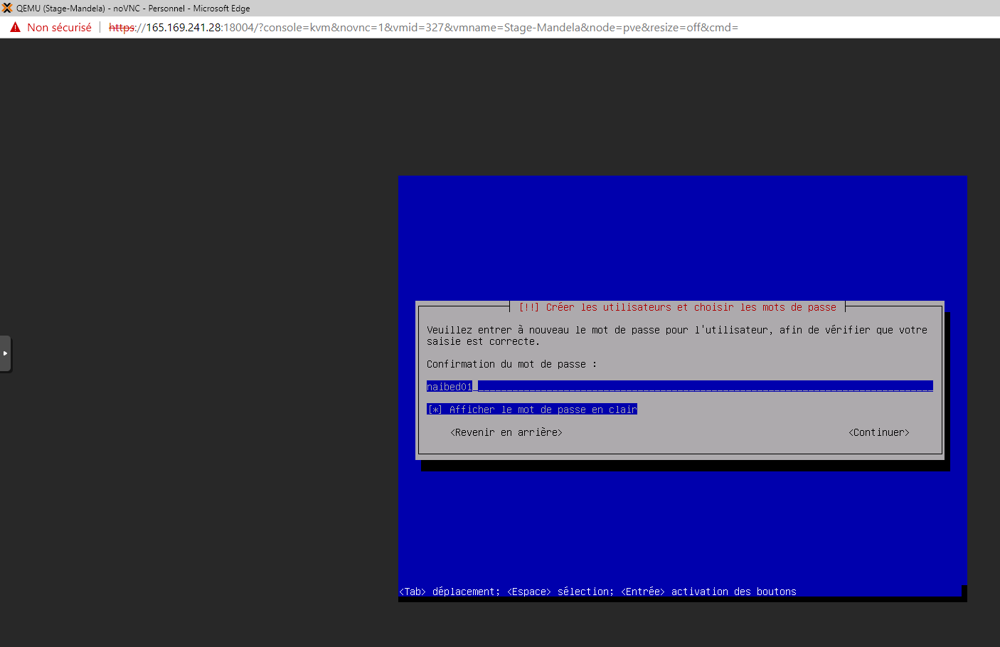
Ensuite, confirmation du même mot de passe et Continuer.
13 / 30
Vous devez maintenant partitionner votre disque dur. Par souci de simplicité, je sélectionne Guidé - utiliser le disque entier - cela créera une grande partition pour le système de fichiers / et une autre pour le swap (bien sûr, le partitionnement dépend entièrement de vous - si vous savez ce que vous faites, vous peut également configurer vos partitions manuellement). Pour les systèmes d'hébergement comme les didacticiels de serveur parfait ISPConfig 3, vous pouvez choisir par exemple 60 Go pour / et une grande partition /var car toutes les données
de site Web et de courrier électronique sont stockées dans les sous-répertoires de /var.
14 / 30
Sélectionnez le disque que vous souhaitez partitionner ci-dessus.
15 / 30
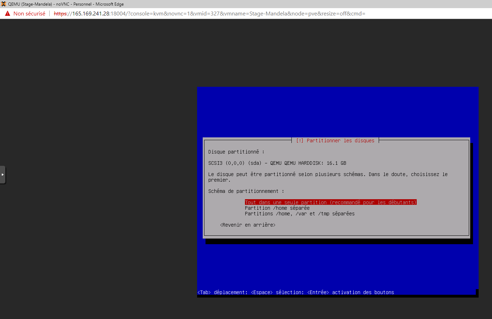
Sélectionnez ensuite le schéma de partitionnement. Comme mentionné précédemment, je sélectionne Tous les fichiers dans une partition
(recommandé pour les nouveaux utilisateurs) par souci de simplicité - c'est à votre goût ce que vous choisissez ici donc pour l’instant en choisissent le premier partition.
16 / 30
En a laissé par défaut et n’ a rien modifier.
Le résultat ci-dessus.
Si vous voulez modifier, vous pouvez changer la partition et ré-ajouter.
17 / 30
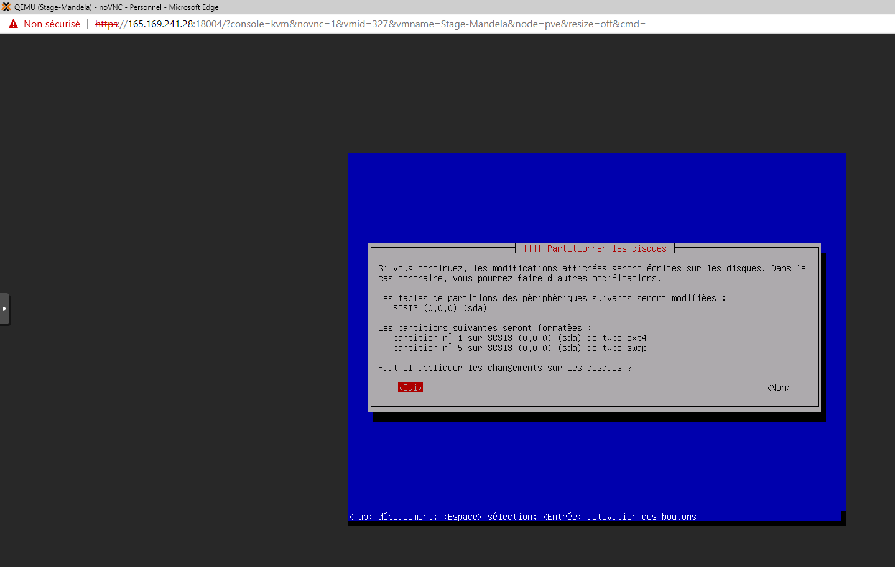
Quand on a fini de modifier le partition et choisir Oui.
Pour dire que lorsque vous êtes invité: "Écrivez les modifications sur le disque ?
Puis, Continuer.
18 / 30
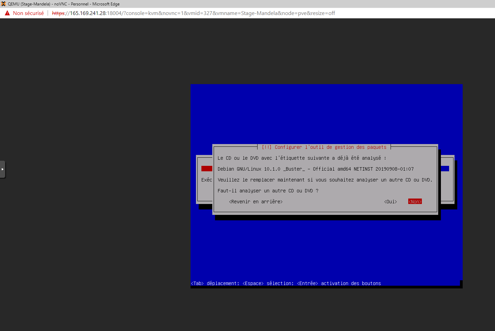
Un petit chargement pour passer la suite.
La suite
C’est pas important en met Non pour l’instant et passe par la suite.
C’est-à-dire : je vais faire une installation en réseau (tous les packages
d'installation supplémentaires sont téléchargés sur Internet), donc je choisis ici de ne pas analyser de disques d'installation supplémentaires.
19 / 30
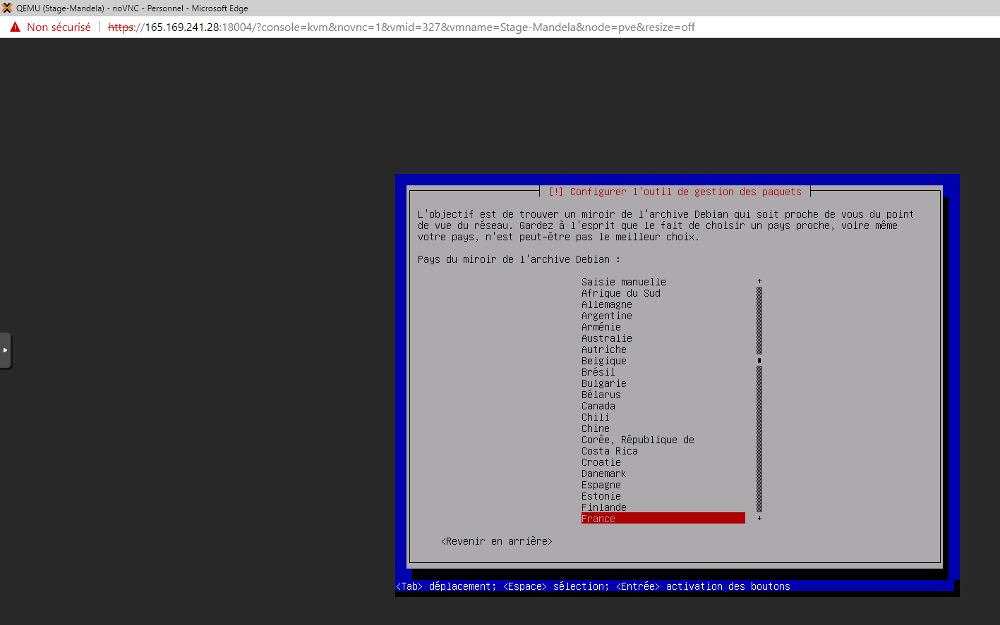
Par la suite, vous devez configurer apt. Comme nous utilisons le CD Debian Netinstall, qui ne contient qu'un ensemble minimal de paquets, nous devons utiliser un miroir réseau.
Sélectionnez le pays dans lequel se trouve le miroir réseau que vous souhaitez utiliser (il s'agit généralement du pays dans lequel se trouve votre système serveur).
20 / 30
Sélectionnez ensuite le miroir que vous souhaitez utiliser (par exemple deb.debian.org ).
21 / 30
Sauf si vous utilisez un proxy HTTP, laissez le champ suivant vide et appuyez sur Continuer.
22 / 30
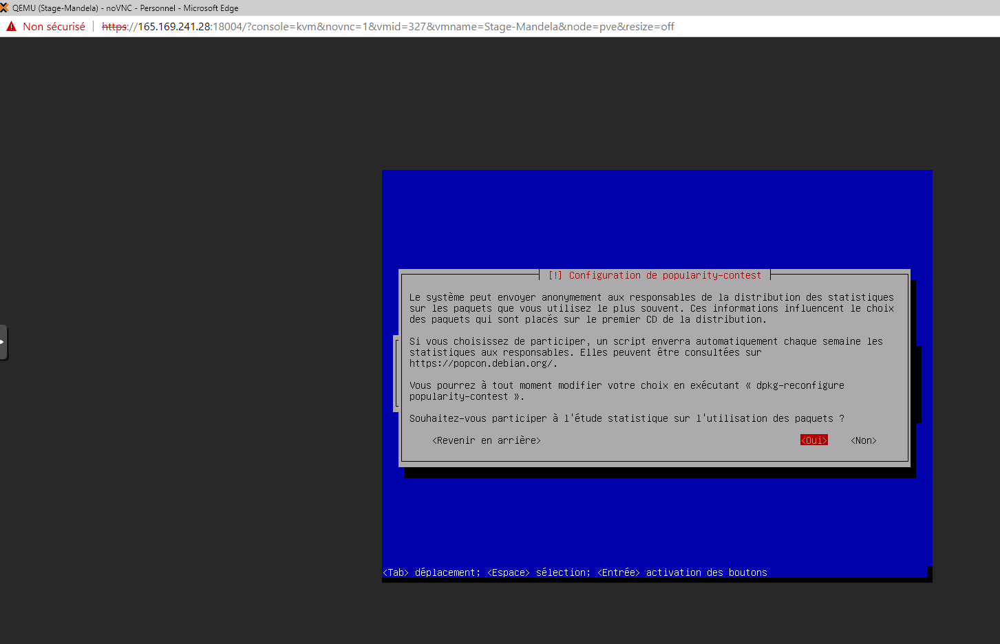
Attente le chargement Apt pour mettre à jour sa base de données de paquets :
Après pour aller page suivant cliquez Oui.
23 / 30
Pour l’instant je laisse par défaut et ré-ajoute juste serveur SSH pour éviter d’installer. Mais, après je vous mets le code pour installer sur le chapitre de Extrait de code sur LAMP et SSH
Le serveur SSH (afin que je puisse immédiatement me connecter au système avec un client SSH tel que PuTTY une fois l'installation terminée) et appuyez sur Continuer. Certains pourraient argumenter qu'il ne faut pas installer les utilitaires système standard sur un serveur minimal, mais à mon avis, vous aurez besoin de la plupart des utilitaires standard plus tard de toute façon, je les installerai donc sur ce serveur dans le cadre de la configuration de base.
24 / 30
Si je vais enlever l’affichage graphique je peux décocher environnement de bureau Debian pour mettre comme affichage ligne de commande. Mais pour l’instant je le laisse car je ne peux pas mettre à distance mon IP pour faire mon site web. Je peux décocher après pour éviter lourde dossier sur proxmox avec la commande tasksel.
Cliquez, Oui pour la suite.
25 / 30
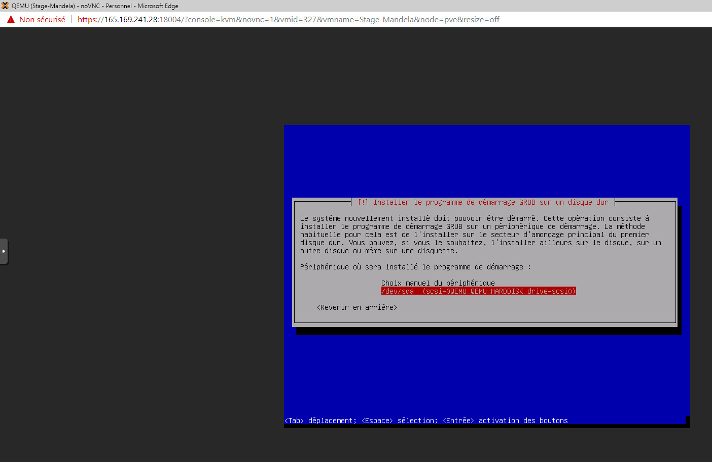
Attente quelque minute pour les téléchargements de packages requis sont installés sur le système.
Par la suite, le programme d'installation peut vous demander dans quelle partition Grub doit être installé. Ce serveur n'a qu'un seul disque dur, donc je choisis /dev/sda ici.
26 / 30
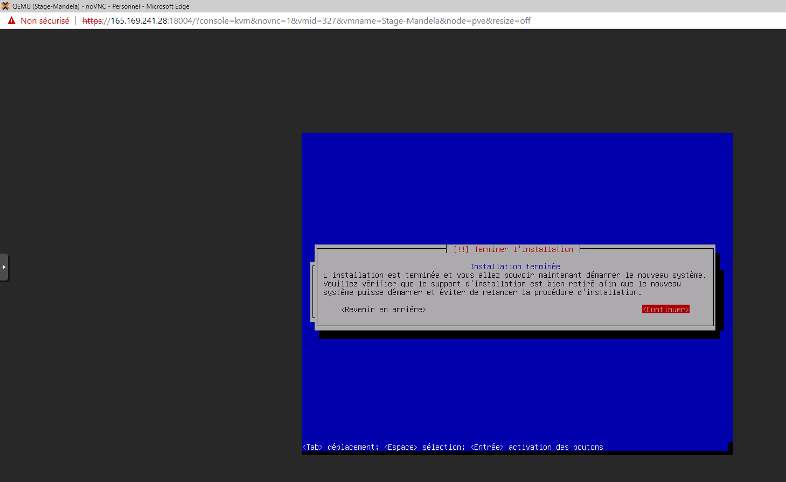
Appuyez sur Entrée et le programme d'installation installe Grub et Terminer l'installation.
L'installation du système de base est maintenant terminée. Retirez le CD Debian Netinstall du lecteur de CD et appuyez sur Continuer pour redémarrer le système.
27 / 30
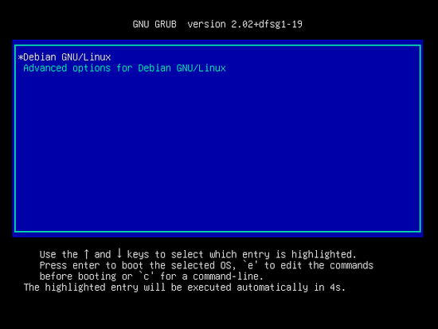
Le premier démarrage du serveur Debian 10 nouvellement installé: vous verrez d'abord l'écran de démarrage du chargeur de démarrage Grub, appuyez sur Entrée ou attendez quelques secondes, le processus de démarrage se poursuivra automatiquement.
28 / 30
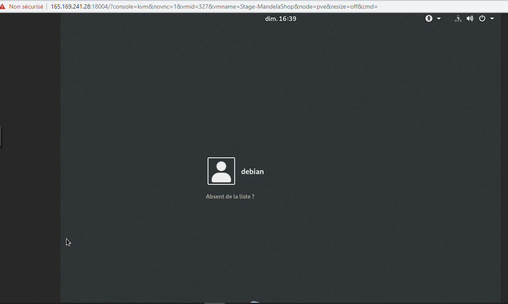
Par la suite, l’écran se connecte s’affiche.
29 / 30
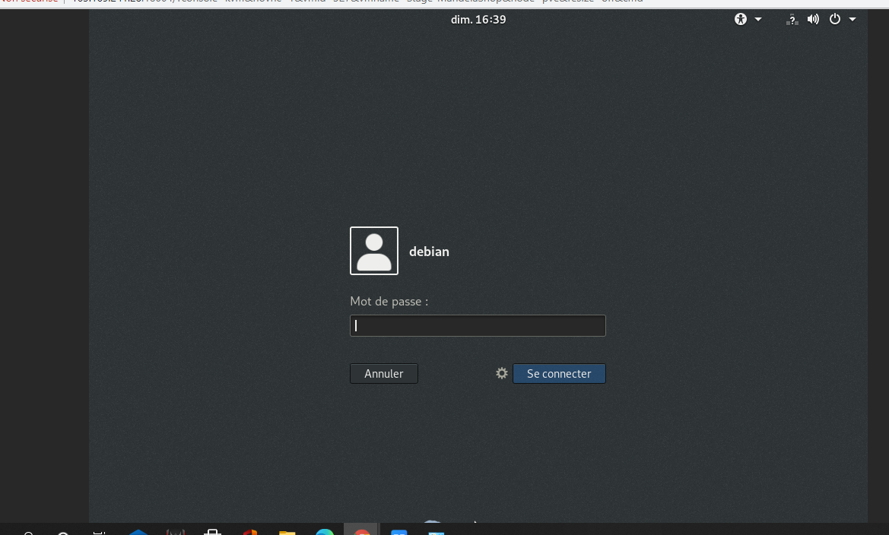
Tapant votre Mot de passe pour Se Connecter.
30 / 30
Comme vous se connecte, votre bureau ouvre la page ci-dessous :